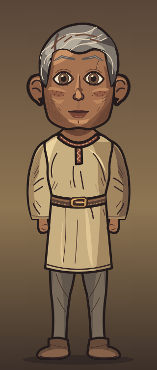
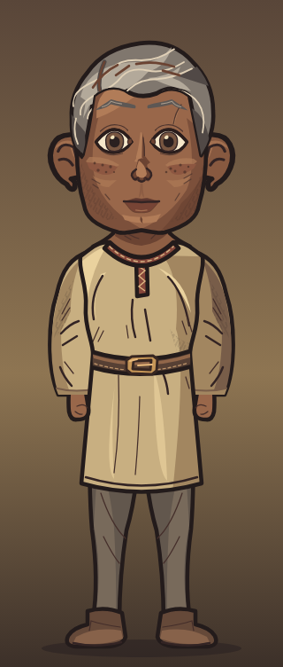
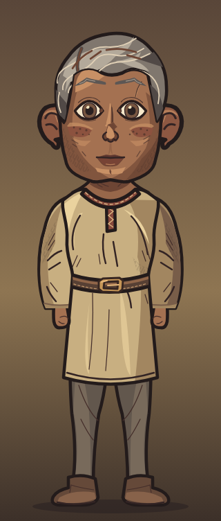

<!doctype html><html lang="ru"><meta charset="utf-8"><meta name="viewport" content="width=device-width,initial-scale=1"><title>Состояние кожи</title><style>body{font:16px system-ui;background:#25201b;color:#eee2cd;margin:0 auto;max-width:1280px;padding:1rem}
    a{color:#f4ca91}h1,h2{font:700 1.7rem Georgia,serif}nav ul{columns:3}.grid{display:grid;gap:1rem;
    grid-template-columns:repeat(auto-fit,minmax(230px,1fr))}article{min-width:0;border:1px solid #655343;
    background:#312821;padding:.6rem;border-radius:5px}a img{vertical-align:middle}img{max-width:100%;height:auto}
    .character{display:block;max-height:460px;width:auto;margin:auto}.card{width:32px;height:32px}
    .detail{display:block;width:100%;margin:.35rem 0}.compare{display:flex;align-items:flex-start;gap:.5rem}
    .compare a{flex:1;min-width:0}small{color:#dccab0}code{overflow-wrap:anywhere}@media(max-width:730px){nav ul{columns:1}}</style><main><nav><a href="index.html">Все разделы</a></nav><h1>Состояние кожи</h1><div class="grid"><article id="appearance__skin_state__plain"><h3>Обычная</h3><code>plain</code><a href="images/4700c7ba640b488b6741e4d79cc457a8803c91406ba74544c8cb19be7dc5d011.png"></a><p><a href="images/12a08c34b0e41d04aa888ca1d2086792ec166818b1070807b08af142c607ac5b.png"></a> <small>32 × 32</small></p></article>
<article id="appearance__skin_state__tanned"><h3>Загар</h3><code>tanned</code><a href="images/0e1b6aa7861c8a6605fdf01a4c83d2e2fc7db0a9b31487b5682ab22fd5da6112.png"></a><p><a href="images/4619ef1b5d8772252eeecc959e08b5f98d5e5555573c2b3e4641c848755f206e.png"></a> <small>32 × 32</small></p></article>
<article id="appearance__skin_state__flushed"><h3>Румянец</h3><code>flushed</code><a href="images/b53814c11e1ada15e859e4574c4e6ed5a8f93c4e93dfd316fc42dec2d95c09bf.png"></a><p><a href="images/b163ed09361745f5c95972a7a742aeaf49ce85bc16f45b6cfe768dbfcf93e86d.png"></a> <small>32 × 32</small></p></article>
<article id="appearance__skin_state__dusty"><h3>Дорожная пыль</h3><code>dusty</code><a href="images/74bd1e955167c3f6b3a62644455f53cc4d23c3d857bb8dae81d0c9bab7ef3156.png"></a><p><a href="images/97c23d1dd20de7384b77784b9cae67f7772ed2e3d221a7e2706a42178617e271.png"></a> <small>32 × 32</small></p></article></div></main></html>
